Sistem Komputer & Jaringan
🔌 Eksplorasi Perangkat Keras (Hardware)
1. Perangkat Masukan (Input Device)
Perangkat yang berfungsi untuk memasukkan data atau perintah dari pengguna ke dalam komputer.
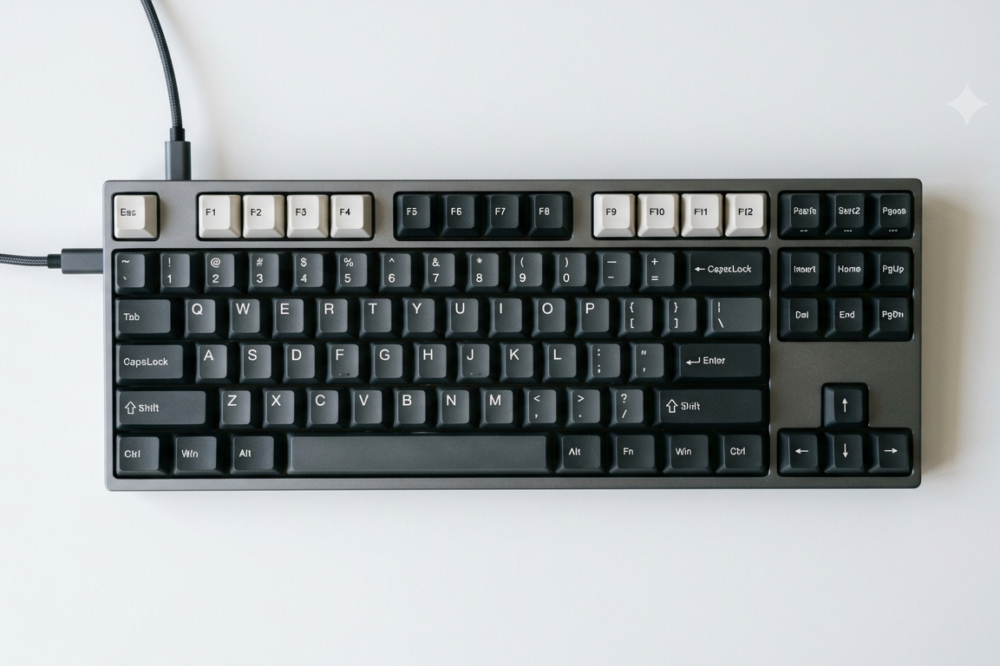
Keyboard
Mengetik teks, karakter, dan memasukkan perintah pintasan ke sistem.
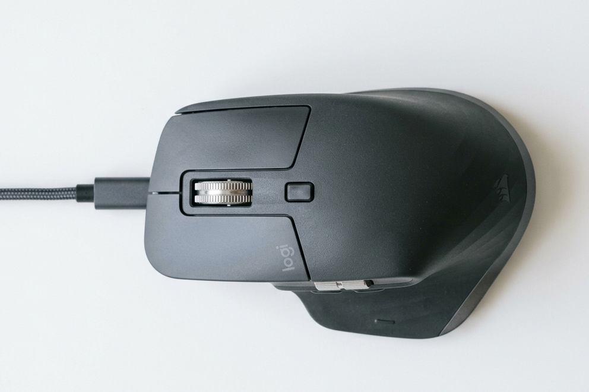
Mouse / Touchpad
Menggerakkan kursor grafik serta mengeksekusi aksi klik objek di layar.
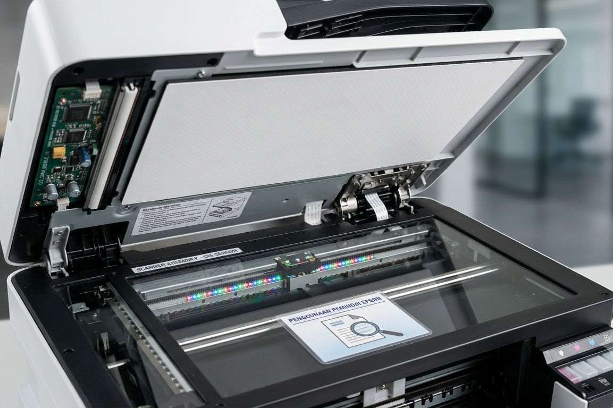
Scanner
Mengubah lembaran dokumen fisik/cetak menjadi berkas format digital.
Mikrofon
Menangkap gelombang audio lalu memasukkannya berupa data suara.
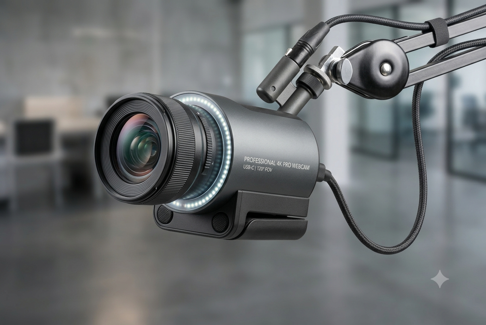
Kamera / Webcam
Mengambil perekaman gambar visual statis maupun siaran video secara langsung.
2. Perangkat Pemrosesan (Processing Device)
Otak komputer yang berfungsi untuk mengolah, menghitung, dan memproses data dari perangkat masukan.
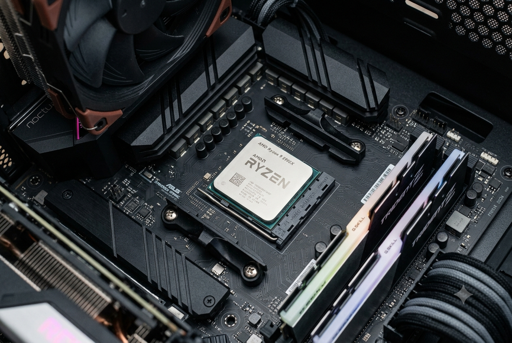
CPU
Pusat kendali komputer utama yang mengeksekusi semua logika aritmetika instruksi program.
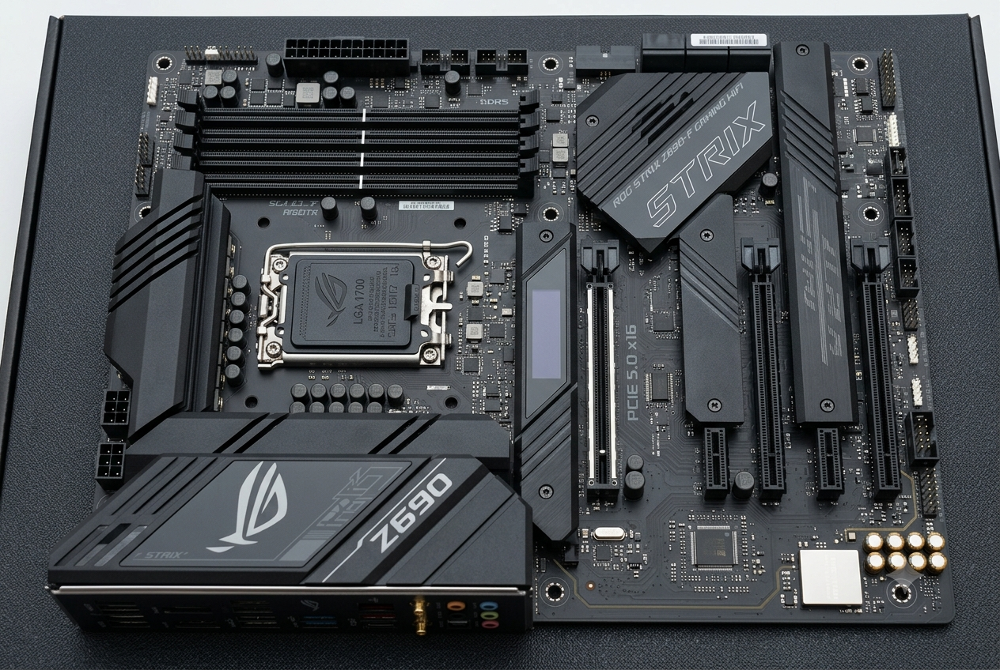
Motherboard
Papan induk sirkuit elektrik utama sebagai wadah penyambung semua modul internal hardware.
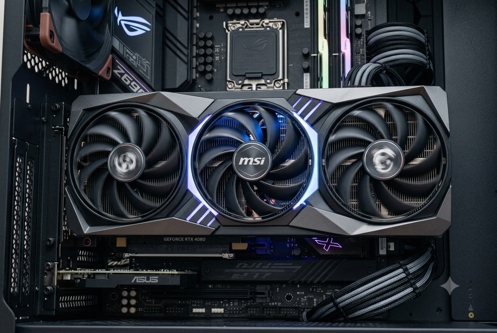
GPU / Kartu Grafis
Akselerator khusus untuk komputasi render visual, grafis 3D, pengolahan video, dan beban kerja AI.
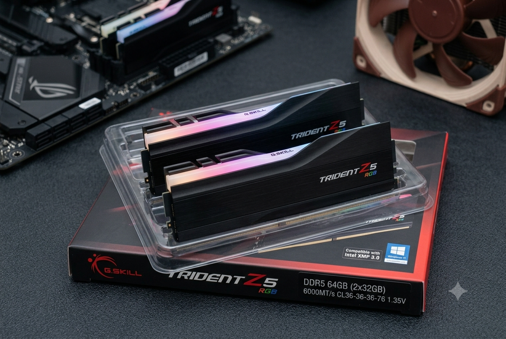
RAM
Memori penyimpanan jangka pendek super cepat untuk menyimpan antrean beban aplikasi aktif.
3. Perangkat Penyimpanan (Storage Device)
Perangkat yang digunakan untuk menyimpan data secara permanen, baik sistem operasi, aplikasi, maupun berkas mandiri.
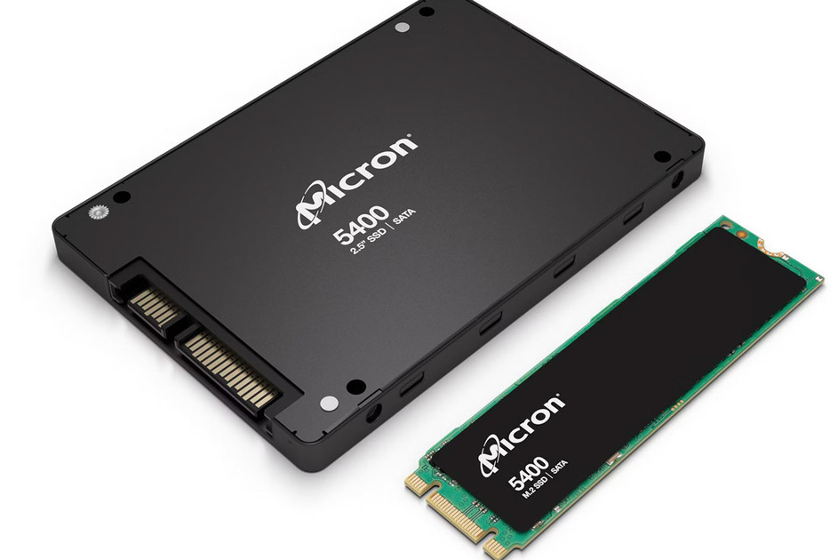
SSD (Solid State Drive)
Media penyimpanan modern berbasis chip flash memory yang memberikan performa baca/tulis kilat tanpa komponen mekanis.

HDD (Hard Disk Drive)
Media penyimpanan piringan magnetik tradisional dengan kapasitas ruang besar namun transfer data lambat.
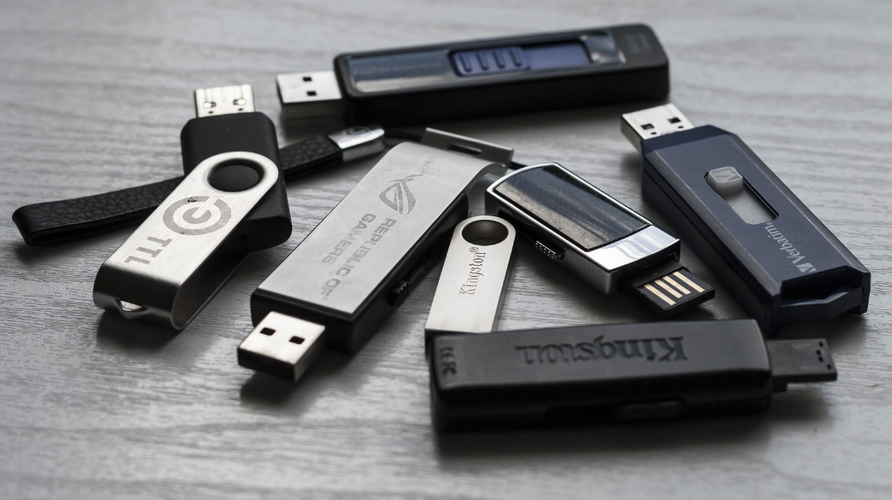
Flashdisk / MMC
Penyimpanan portabel berukuran micro yang fleksibel digunakan untuk mobilitas pemindahan file.
4. Perangkat Keluaran (Output Device)
Perangkat yang berfungsi untuk menampilkan atau mengeluarkan hasil pemrosesan data komputer ke pengguna akhir.
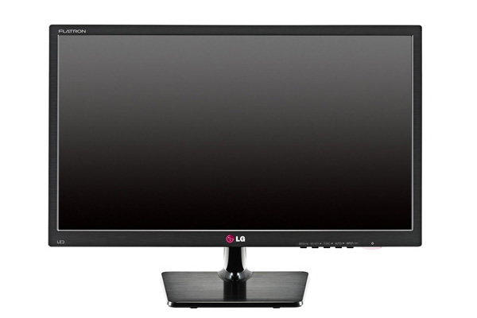
Monitor
Layar penampil antarmuka grafis sistem, berkas teks, gambar, hingga aplikasi.
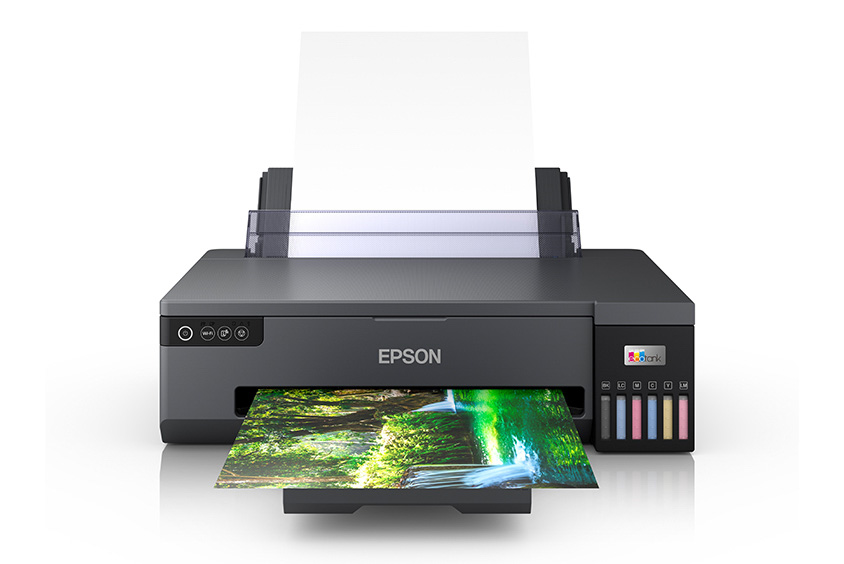
Printer
Mesin pencetak yang menduplikasi berkas data teks/gambar digital ke media kertas fisik.
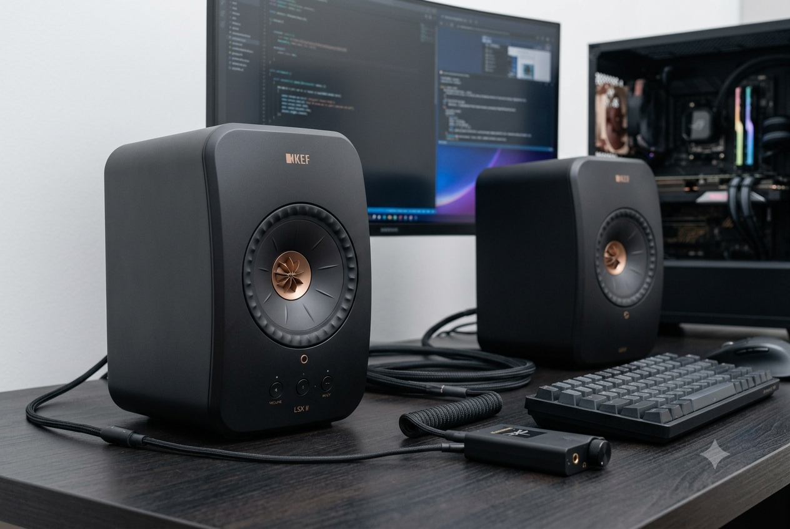
Speaker / Headphone
Transduser output yang mengubah sinyal elektrik digital menjadi gelombang suara yang terdengar.
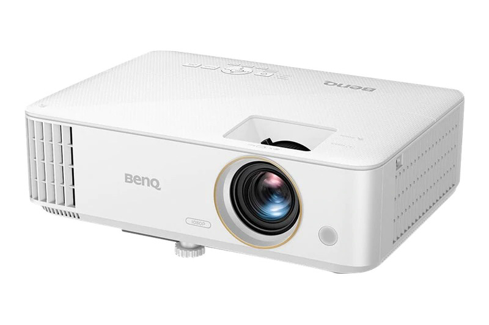
Proyektor
Alat optik yang memancarkan berkas proyeksi gambar komputer ke permukaan dinding datar lebar.
Video Pembelajaran
🎮 Mini-Lab: Simulasi Merakit PC
Terapkan pemahaman logika fungsi hardware! Drag komponen di sisi kiri ke dalam wadah soket yang cocok di sisi kanan.
💿 Eksplorasi Perangkat Lunak (Software)
1. Perangkat Lunak Sistem (System Software)
Perangkat utama pembentuk dasar operasional yang mengelola alokasi hardware internal.
Sistem Operasi (OS)
Pengendali sistem inti komputer (Contoh: Windows, Linux, macOS) yang mengatur manajemen resource memori dan disk drive.
2. Perangkat Lunak Aplikasi (Application Software)
Program pelengkap modular khusus yang dieksekusi user untuk menunjang aktivitas produktivitas atau hiburan.
Web Browser
Pintu akses berselancar internet (Contoh: Google Chrome, Firefox) untuk memuat skrip web.
Editor Kode / IDE
Lingkungan penulisan baris sintaks bahasa pemrograman (Contoh: VS Code) bagi developer web/mobile.
Video Pembelajaran
🌐 Infrastruktur Jaringan Komputer & Internet
1. Perangkat Jaringan (Networking Device)
Hardware khusus penunjang interkoneksi lalu lintas transmisi data antar-node komputer terenkripsi.
Modem
Modulator-demodulator yang menerjemahkan sinyal ISP penyedia internet luar menjadi jalur data digital lokal.
Router
Perute cerdas yang memetakan gerbang IP address, menjembatani submateri routing, dan memancarkan sinyal Wi-Fi nirkabel.
NIC / LAN Card
Kartu kendali antar muka jaringan kabel ethernet fisik sebagai modul penerima paket data.
📚 Sumber Referensi Materi
- Buku Siswa Informatika SMK/SMA Kelas X, Elemen Sistem Komputer & Jaringan Komputer Internet, Kementerian Pendidikan, Kebudayaan, Riset, dan Teknologi RI.
- Modul Ajar Dasar Pemasangan Hardware & Pengenalan Perangkat Jaringan Telekomunikasi Cisco.